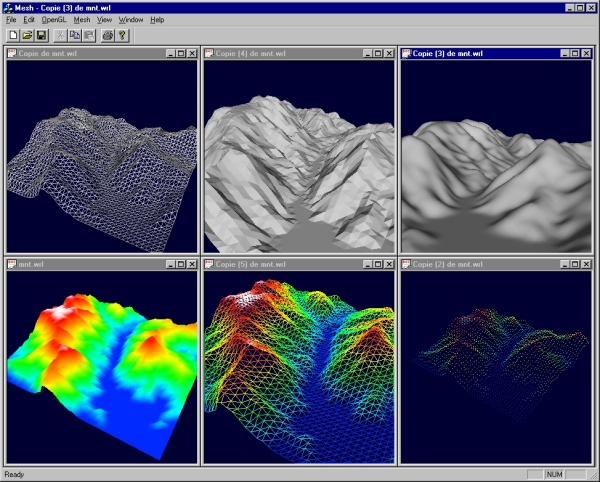
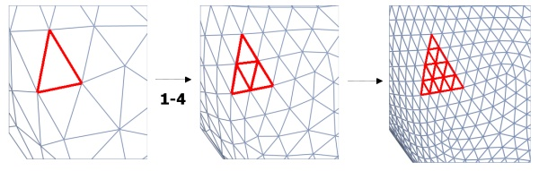
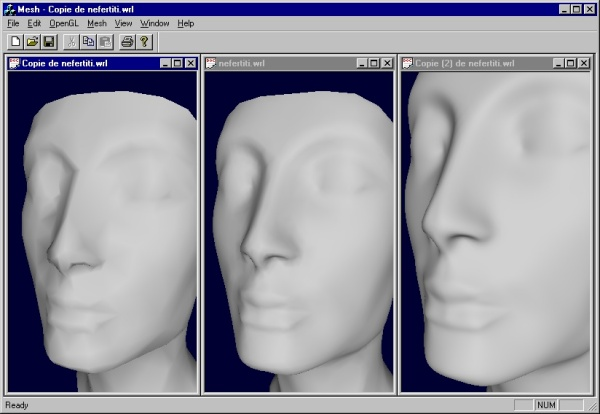

A small VRML viewerusing OpenGL and MFCPierre Alliez |
|
| Environment: VC6 SP2, NT4 SP5 | Keywords: OpenGL, WRL, GUI |

FIG. 1. You can easily display a wrl-based terrain
using OpenGL and MFC.
This contribution is a small MFC sample to learn how to :
int list = ::glGenLists(1); // ask for a free id number ::glNewList(list,GL_COMPILE_AND_EXECUTE); ::glBegin(GL_TRIANGLES); // std gl calls here... fill vertices, normals, colors ::glEnd(); ::glEndList();A good command sequence to use a display list may be :
if(::glIsList(list) == GL_TRUE) ::glCallList(m_ListOpenGL);The sample builds a scene graph from a vrml 2.0 file (exported via 3D Studio Max only), then uses display lists. Each 3D mesh contains a list number, and use a glCallList command instead of standards glBegin(GL_TRIANGLES) commands when its list is built. A flag m_Modified permits to rebuild the list when the mesh is modified.
//********************************************
// The 3D mesh class definition
//********************************************
class CMesh3d : public CObject3d
{
private :
// Std datas
CArray<CVertex3d> m_ArrayVertex;
CArray<CFace3d> m_ArrayFace;
// OpenGL-specific
unsigned int m_ListOpenGL;
BOOL m_ListDone;
BOOL m_Modified;
.../...
public :
BOOL glDraw();
.../...
}
//********************************************
// Mesh drawing
//********************************************
BOOL CMesh3d::glDraw()
{
// Build list at first
if(!m_ListDone || m_Modified)
glBuildList();
// Is the list valid ?
if(::glIsList(m_ListOpenGL)==GL_TRUE)
{
::glCallList(m_ListOpenGL);
return TRUE;
}
return FALSE;
}
//***********************************************
// RenderScene
//***********************************************
void CMeshDoc::RenderScene()
{
// Main drawing
m_SceneGraph.glDraw();
// Add wireframe (no light, and line mode)
if(m_AddWireframe)
{
// Set state
::glDisable(GL_LIGHTING);
::glPolygonMode(GL_FRONT_AND_BACK,GL_LINE);
::glEnable(GL_POLYGON_OFFSET_LINE);
::glPolygonOffset(m_PolygonOffset,-1.0f);
// Draw again...
m_SceneGraph.glDraw(TYPE_MESH3D);
// Restore light and mode
::glDisable(GL_POLYGON_OFFSET_LINE);
::glPolygonMode(GL_FRONT_AND_BACK,GL_FILL);
::glEnable(GL_LIGHTING);
}
::glFlush();
}
FIG.3. The one-to-four triangle subdivision scheme used by method.
//***********************************************
// Smooth subdivision
//***********************************************
void CMeshDoc::OnMeshLoop()
{
BeginWaitCursor();
int NbObject = m_SceneGraph.NbObject();
for(int i=0;i<NbObject;i++)
{
CObject3d *pObject3d = m_SceneGraph[i];
if(pObject3d->GetType() == TYPE_MESH3D)
{
CMesh3d *pMesh = (CMesh3d *)pObject3d;
pMesh->SubdivisionLoop();
}
}
UpdateAllViews(NULL);
EndWaitCursor();
}

FIG.5. See the visual enhancement obtained by a smooth
subdivsion scheme..
//***********************************************
// Left button -> x/y translation
//***********************************************
void CMeshView::OnLButtonDown(UINT nFlags, CPoint point)
{
m_LeftButtonDown = TRUE;
m_LeftDownPos = point;
SetCapture();
CView::OnLButtonDown(nFlags, point);
}
void CMeshView::OnLButtonUp(UINT nFlags, CPoint point)
{
m_RightButtonDown = FALSE;
m_LeftButtonDown = FALSE;
ReleaseCapture();
CView::OnLButtonUp(nFlags, point);
}
//***********************************************
// Right button : z translation
//***********************************************
void CMeshView::OnRButtonDown(UINT nFlags, CPoint point)
{
m_RightButtonDown = TRUE;
m_RightDownPos = point;
SetCapture();
CView::OnRButtonDown(nFlags, point);
}
void CMeshView::OnRButtonUp(UINT nFlags, CPoint point)
{
m_RightButtonDown = FALSE;
m_LeftButtonDown = FALSE;
ReleaseCapture();
CView::OnRButtonUp(nFlags, point);
}
//***********************************************
// Mouse move
// Both : rotation
// Left : x / y translation
// Right : z translation
//***********************************************
void CMeshView::OnMouseMove(UINT nFlags, CPoint point)
{
// Both : rotation
if(m_LeftButtonDown && m_RightButtonDown)
{
if(m_xyRotation)
{
m_yRotation -= (float)(m_LeftDownPos.x - point.x) * m_SpeedRotation;
m_xRotation -= (float)(m_LeftDownPos.y - point.y) * m_SpeedRotation;
}
else
{
m_zRotation -= (float)(m_LeftDownPos.x - point.x) * m_SpeedRotation;
m_xRotation -= (float)(m_LeftDownPos.y - point.y) * m_SpeedRotation;
}
m_LeftDownPos = point;
m_RightDownPos = point;
InvalidateRect(NULL,FALSE);
}
else
// Left : x / y translation
if(m_LeftButtonDown)
{
m_xTranslation -= (float)(m_LeftDownPos.x - point.x) * m_SpeedTranslation;
m_yTranslation += (float)(m_LeftDownPos.y - point.y) * m_SpeedTranslation;
m_LeftDownPos = point;
InvalidateRect(NULL,FALSE);
}
else
// Right : z translation
if(m_RightButtonDown)
{
m_zTranslation += (float)(m_RightDownPos.y - point.y) * m_SpeedTranslation;
m_RightDownPos = point;
InvalidateRect(NULL,FALSE);
}
CView::OnMouseMove(nFlags, point);
}